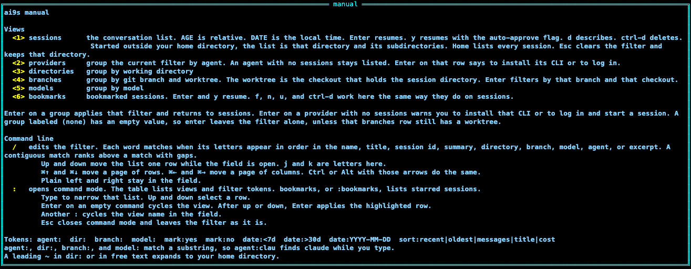
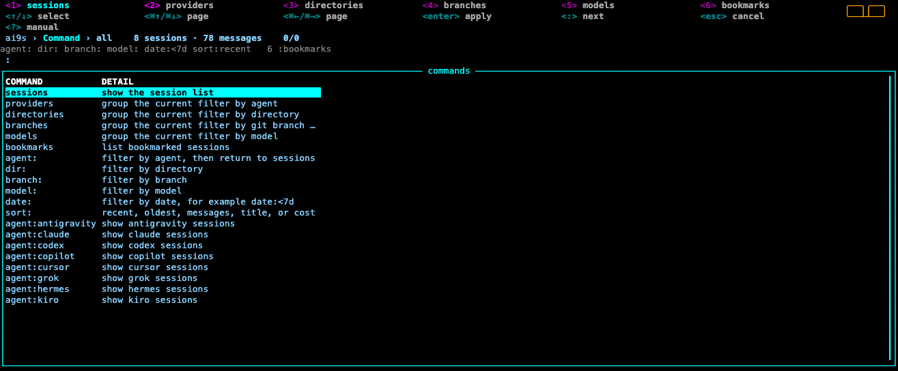

Keys
The same manual is inside the program. Press ?. j and k scroll it, g and G jump, and Esc, q, or ? returns to the list.
Hotkeys are drawn in a grid at the top. View keys are the first row and the active view is bold. Actions continue on the rows under that, and installed plugin keys get rows of their own. Angle brackets mark the key, in the same style as k9s.

?.
:.| Key | Action |
|---|---|
1–6 | Sessions, providers, directories, branches, models, bookmarks. Branches lists the git branch and the worktree that contains the session. 6 and :bookmarks list bookmarked sessions. |
| Enter | Resume the selected session. Quitting that session returns to ai9s, which takes the terminal back. On a group view, apply that group as a filter and return to sessions. On a provider with no sessions, ai9s says to install that CLI or to log in and start a session. |
y | Resume the selected session and pass that agent's auto-approve flag. The top menu shows y yolo on sessions and bookmarks, and on describe for those lists. Agents without that flag resume with the same command Enter uses. On a group view, y says to switch to sessions. |
j / k, up / down | Move one line when the list or the preview is focused. Up and down do the same, including while the filter or command field is open. In the manual, j and k scroll a line. In those fields they are typed letters. |
g / G | Jump to the top or the end of the list, the preview, or the manual. In the filter and command fields they are typed letters. |
h / l, left / right | Pan when the list or the preview is focused. In the filter and command fields, plain left and right stay in the field and these letters are typed. |
| ⌘↑ / ⌘↓ | Move a page of rows. The list moves its selection. The preview scrolls its text. Control or Alt with up and down do the same, and so do Page Up, Page Down, Ctrl-B, and Ctrl-F, including while the filter or command field is open. |
| ⌘← / ⌘→ | Move a page of columns, on the list and in describe, including while the filter or command field is open. Control or Alt with left and right do the same. |
| Mouse | The wheel scrolls the view on screen, including the menu, the crumbs, and the manual. A horizontal wheel pans, and so does Shift with the vertical wheel. The list and the preview each have a scrollbar on the right, and a scrollbar along the bottom when a line is wider than the window. Drag a bar or click it to jump. Hotkeys stay on the top menu. |
d | Describe the selected row. The list is replaced by the preview. Esc returns to the list. Tab opens and closes the same view. |
/ | Edit the filter text. Up and down move the list while the field is open. ⌘↑ and ⌘↓ move a page of rows. ⌘← and ⌘→ move a page of columns. Plain left and right stay in the field. j and k are letters here. |
| Esc | From describe, return to the list and leave the filter. After opening sessions from a group, return to that group and clear the filter. On that group, or on the sessions list itself, clear the filter and stay there. In the manual or command mode, Esc goes back and leaves the filter alone. |
: | Command mode. Type a view name or a filter token. Up and down select a row. Enter applies the highlighted row. Enter on an empty command cycles the view. Another : cycles the view name in the field. Esc closes it. |
| Ctrl-D | Delete, after confirmation. Sessions and bookmarks. |
a | Cycle the agent: filter. |
p | Add a dir: filter and focus the filter line so you can finish it. |
o | Cycle sort: recent, oldest, messages, title, cost. |
f | Bookmark the selected session, or clear that bookmark. A star in the first column marks it. The bookmark stays through a reindex. 6 or :bookmarks lists bookmarks. Sessions and bookmarks. |
n | Rename the selected session. Enter on Save stores the name. Esc cancels. An empty name restores the default. The name stays through a reindex. Sessions and bookmarks. |
u | Usage for the selected session: messages, context, tokens, and the other recorded numbers. Sessions and bookmarks. |
s | Stats for every indexed session. |
? | Manual, on the same true-black screen as the list. j and k scroll a line. The wheel, page keys, and ⌘↑ / ⌘↓ scroll a page. g and G jump. q, ?, or Esc closes it. |
q | Quit. |
Preview
The list is the only window until you press d. Describe replaces it with the preview and always shows context and token usage. j and k or up and down scroll a line. h and l or left and right pan a line that is wider than the window. ⌘↑ and ⌘↓ move a page of rows. ⌘← and ⌘→ move a page of columns. Page Up, Page Down, Ctrl-B, and Ctrl-F scroll a page of rows. g and G jump to the top or the end. Esc returns to the list. The wheel scrolls the view on screen. A horizontal wheel, or Shift with the vertical wheel, pans. Each view has a scrollbar on the right, and a bottom scrollbar when a line is wider than the window. AGE is a relative age. DATE is the local date and time. Started in a project directory, the list is sessions in that directory and its subdirectories. Started in your home directory, the list is every session. Esc clears the filter and keeps that directory. The session list has no two-letter agent column. NAME is the last column and stays whole, so the row can pan. Every other column is cut to a fixed width, and a path keeps its ending. Describe shows the full value. NAME is the name set with n, or the session title, or the session id when the session has no title. An empty name restores that default. The name stays through a reindex. sort:title sorts NAME. u shows that session's usage. s shows every session. TOKENS sits beside CTX. COST is the recorded USD amount, or a dash. A star in the first column is a bookmark. The list reindexes every 30 seconds.
Group views
Providers, directories, branches, and models group the current filtered list. The branches view has a branch column and a worktree column. The worktree is the git checkout that contains the session directory, including the main checkout and a linked worktree. Enter on a branches row filters by that branch and that checkout. Enter on another group sets the matching token and returns to sessions. Enter on a provider with no sessions says to install that CLI or to log in and start a session. A row labeled (none) has an empty value, so Enter leaves the filter alone, unless that branches row still has a worktree. Bookmarks lists starred sessions. Enter, y, delete, rename, bookmark, and usage work on sessions and on bookmarks. From a group view, those keys tell you to switch back first.
Example plugins
Copy a pair from examples/plugins into the config plugins/ directory. After a restart, e opens the directory, c copies a reference, b shows git status and recent commits, and t opens a terminal there. Those keys appear on the menu. See Config.
Command mode
The table lists view names, including bookmarks, and tokens: agent:, dir:, branch:, model:, date:, and sort:. Typing :bookmarks or bookmarks lists bookmarked sessions. Typing narrows that list. Up and down move through that list while the field stays focused. Enter on a token with a value rewrites that token in the filter and returns to sessions. Enter on a token with no value focuses the filter so you can type the rest, the same way p does. mark:yes still filters the session list.